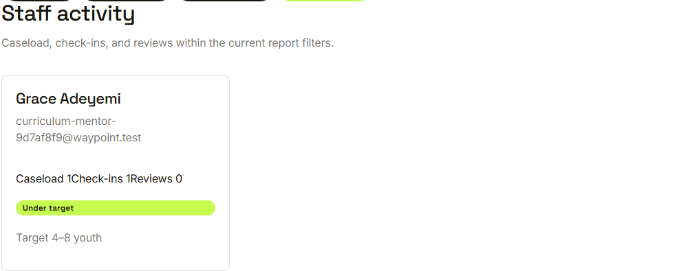
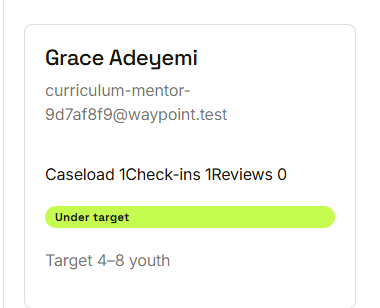
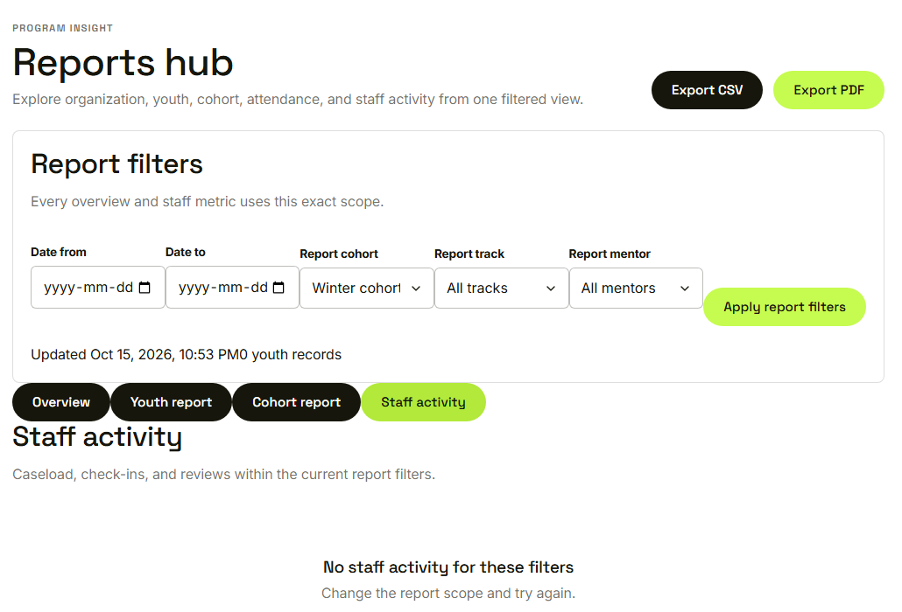

Waypoint · Video 101
The staff activity report
How the mentoring work is shared
The staff activity tab

Caseload, check-ins and reviews within the current filters
One card per mentor

Load balance against the target range
An empty scope says so

Change the report scope and try again
Things to remember
Caseload, check-ins and reviews per mentor
Load balance label against the target range
Overload is flagged in red
Follows the hub filters